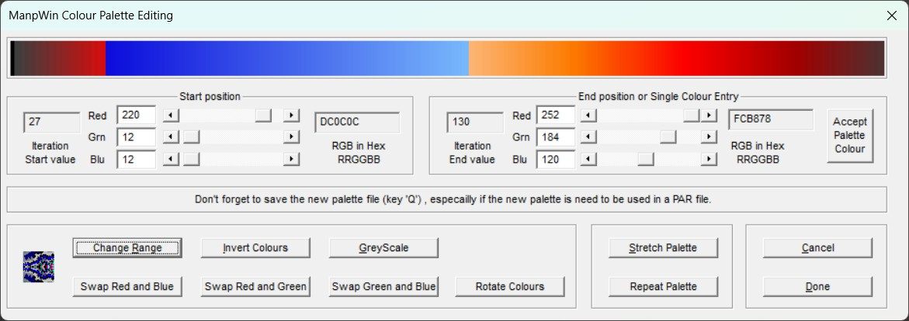

ManpWIN provides an interactive palette editor for modifying colour maps used in fractal rendering. This allows precise control over colour ranges, gradients, and effects.

To modify part of the palette:
The selected region can then be modified using the available controls.
The editor allows control over the start and end of the selected range:
Changes are applied across the selected range, allowing smooth gradients or sharp transitions.
The following operations are available:
For fractals with high iteration counts:
These options are useful when the palette appears compressed or lacks detail at higher iteration levels.
Once editing is complete:
Saving the palette allows it to be reused in future renders or parameter files.
Palette editing is an experimental and creative process. Small changes can produce dramatically different visual results, so experimentation is encouraged.